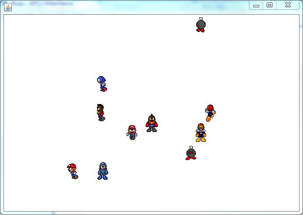
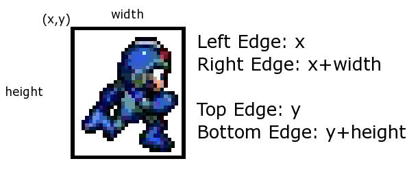
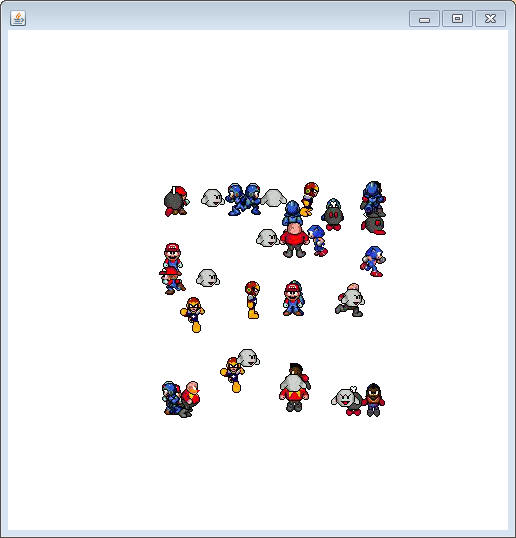
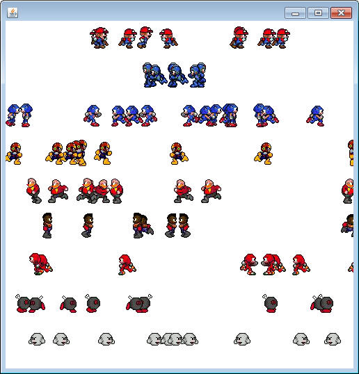

The Wanderer Class
Copy and run the class below to meet the Wanderers. If you read the code, you'll see this object has an array of Wanderer objects. The paintWindow method loops through and paints all of them on to the window. Whenever the timer ticks, all of the Wanderers are told to move in whichever direction they're set to go.
import sacco.*;
public class WanderWorld extends SaccoObject
{
public Wanderer[] wanderers;
public WanderWorld(Wanderer[] wanderers)
{
this.wanderers = wanderers;
}
public void onTimerTick()
{
for(int i = 0; i<wanderers.length;i++)
{
wanderers[i].update();
}
}
public void paintWindow(PaintBrush brush)
{
for(int i = 0; i < wanderers.length;i++)
{
wanderers[i].paintSelf(brush);
}
}
public void launch()
{
this.setVisible(true);
this.start();
}
public static void main()
{
Wanderer[] wanderers = new Wanderer[20];
for(int i = 0; i < 20; i++)
wanderers[i] = new Wanderer(250,250);
WanderWorld w = new WanderWorld(wanderers);
w.launch();
}
}
The Wanderer is your very own little friend. A Wanderer is created with a random character that is either standing or running and is facing up, down, left, or right. After a random delay, a random state is chosen. This automation may be turned off by calling setAutomation(false)

What makes up a Wanderer?
The State of the Wanderer
The way that the Wanderer stores it's direction is with a single int. It would be silly to remember that a 0 means "running upwards" and a 1 means "running downwards". To help with this, there are eight static final ints in the Wanderer class: RUN_UP, RUN_DOWN, RUN_LEFT, RUN_RIGHT, STAND_UP, STAND_DOWN, STAND_LEFT, and STAND_RIGHT.
Unless you have a great memory, you wouldn't call setState(5). You would most likely call setState(Wanderer.STAND_DOWN) because it is much simpler to remember.
The Character Number
Wanderer's character number is the id number of the character that the Wanderer displays. There is a setCharacterNumber and getCharacterNumber method.
| 0 | 1 | 2 | 3 | 4 | 5 | 6 | 7 | 8 |
There are tons of setters and getters to help you manipulate what the wanderer is doing. Read through the API to check what methods are available:
Wanderer's API Read this, it has all of the methods that you'll want later
The driving force of a Wanderer is the update method. That is the method the DrawingBoard will call frequently. Wanderer's update method will update the image for animation, move the Wanderer, and possibly change direction.
Extending Wanderer:
You will be creating three classes that extend Wanderer and override methods to make them act as desired. Don't forget that if you are overriding a method you want to mimic the original method's actions but also change it in some way. If you want to call the original version of the method to run, you must call the method using super as the variable.
| Example: AntiGhostWanderer Mr. Sacco likes all the Wanderers except he's scared of the Ghost. He's so afraid that he doesn't want to allow the Ghost to be a character. While thinking about the methods that a Wanderer has, the one in charge of the character selection is the setCharacterNum method. In order to prevent a ghost (character number 8) from appearing, the AntiGhostWanderer below has overridden the setCharacterNum method to continually randomize the character number whenever it finds that the Ghost has been chosen. import sacco.*;
public class AntiGhostWanderer extends Wanderer
{
public AntiGhostWanderer(double x, double y)
{
super(x,y);
}
public void setCharacterNumber(int charNum)
{
//keep randomizing until charNum is not 8
while(charNum == 8)
{
charNum = (int)(Math.random()*9);
}
//Don't forget that you still have to actually
//set the character number
super.setCharacterNumber(charNum);
}
}
Two thinks are happening here: 1) The constructor is very simple. The only thing it does is to use super to call the original Wanderer constructor. This is actually important, since there are variables that belong to Wanderer that need to be set up. Whenever writing a constructor in a child class, you should always consider calling the super constructor. 2) We are changing how the object behaves by overriding the inherited method. We've modified it so that it works a little trickery when setting the number. Another important step was that we used super to call the setCharaterMethod; we may have overridden it, but we can still use it. The use of super is very important. This inherited method is the only way to actually change the character number. If it accidently said this.setCharacterNumber(charNum), that would mean that this version of the method is calling itelf. Which will then call itself again, and again, and again, and again forever until the computer crashes and throws a StackOverflowException
Test it out: Use this runner, which constructs 20 AntiGhostWanderers and gives it to a WanderWorld to power them. public static void antiGhostRunner()
{
Wanderer[] wanderers = new Wanderer[20];
for(int i = 0; i < wanderers.length; i++)
wanderers[i] = new AntiGhostWanderer(250,250);
WanderWorld w = new WanderWorld(wanderers);
w.launch();
}
A note about Polymorphism: In most of the runners tonight, the type of Wanderer is going to change, but that doesn't mean much is going to change about the runner. Since each different Wanderer you'll create extends from Wanderer, it IS-A Wanderer. Notice in the runner code above that a bunch of AntiGhostWanderers are being constructed into an array of Wanderers. Polymorphism makes it happen |
Assignments:
For each assignment below, create one object that extends Wanderer. Each different type of Wanderer will act distinctly different in some way. You may affect how they work by overriding the right methods.
Don't forget that you don't have direct access to any of the core instance fields directly. Your only means of affecting them is by calling the inherited method (using this).
The API is full of all the methods you'll be inheriting and calling
SprintingWanderer
Create a class named SprintingWanderer that extends Wanderer. The goal is to make a Wanderer that does not stand, but always runs. You can achieve this by creating a constructor that takes in two doubles to represent x and y. Since this Wanderer is going to be a sprinter, you should make the constructor set the speed to 10 and the character to Sonic (id number 2).
Since we don't want the AI to set the state to standing, override the setState method and make it so that if a "stand" value is passed in, the corresponding "run" value is set instead. For example, if the value passed in was Wanderer.STAND_LEFT, the result should be a Wanderer that has had its state set to Wanderer.RUN_LEFT.
WARNING: The number one mistake is to not have a call to super.setState. Don't forget that the parameter state is just a local variable and changing it's value means nothing to the instance fields until you call super.setState(state);
Test your program with the following:
public static void sprintRunner()
{
Wanderer[] wanderers = new Wanderer[20];
for(int i = 0; i < wanderers.length; i++)
wanderers[i] = new SprintingWanderer(250,250);
WanderWorld w = new WanderWorld(wanderers);
w.launch();
}
BoundedWanderer
Create a class named BoundedWanderer that extends Wanderer. The goal is to make a Wanderer that will be stopped from going outside a certain boundary.
Add four ints as instance fields to represent the minimum and maximum x and y that the BoundedWanderer can be within.
Start with the constructor:
public BoundedWanderer(int minX, int minY, int maxX, int maxY )
This constructor should set the incoming values to the new instance fields. It should also randomize the x and y to something between their respective max and mins. This is trickier than it sounds. The problem is that the call to super must be the first line, but random numbers take some time to generate. There are two options:
1) Make super the first line, but build the
Math.random into it. This can get pretty ugly
2) Start by calling super(0,0). This will set x and y to zero, but
they can be changed later using the setXY method that you inherit.
Overriding:
Override the update method so that after it updates like normal, but then
checks to see if the Wanderer has gone outside the boundary. If it has,
set the location to be just inside the boundary. This can be done with
four different if statements. If a value is out of range, set it to the
boundary. This will cause the Wanderer to be trapped in an invisible box.
It is important that you call the original update method using super. Otherwise there will be no actual movement.

Run it with this method which creates many BoundedWanderers in the box 150,150 to 300,300:
public static void boundedRunner()
{
Wanderer[] wanderers = new Wanderer[40];
for(int i = 0; i < wanderers.length; i++)
wanderers[i] = new BoundedWanderer(150,150,350,350);
WanderWorld w = new WanderWorld(wanderers);
w.launch();
}

LevelWanderer
Create a class named LevelWanderer, which extends the Wanderer class. The LevelWanderer will have an instance field that represenst the y value that is the LevelWanderer target level.
You must provide a constructor, which should take care of the parameters, and set the default target y value to 250.
Since we don't want a levelWanderer to forever be stuck at level 250, add a method void setTargetY(int yVal)
Our goal is to make sure that the LevelWanderer is always headed towards its target level. Overrider the update method so that it first calls super.update, and then has an else if chain to force the state to be one that seeks the target level. There are three possibilities:
1) The LevelWanderer is more than 5 above its target level, set the state to RUN_DOWN
2) The LevelWanderer is more than 5 below its target level, set the state to RUN_UP
3) The LevelWanderer is neither of the above, meaning it's close enough to the target level. In this case we want to make sure that it doesn't run up or down anymore. Use a while loop that looks at the current state and calls the changeState method as long as the state is either RUN_UP or RUN_DOWN. This should guarantee that the state ends up as anything but those two.
Test out your LevelWanderer with the following method. It is a little different than the others. I use the character number to derive the target y value. Meaning that each character will have a different level.
public static void levelRunner()
{
LevelWanderer[] wanderers = new LevelWanderer[100];
for(int i = 0; i < wanderers.length; i++)
{
wanderers[i] = new LevelWanderer(250,250);
int y = 500*wanderers[i].getCharacterNumber()/9;
wanderers[i].setTargetY(y);
}
WanderWorld w = new WanderWorld(wanderers);
w.launch();
}

Another reminder about Polymorphism!
In the runner that we just used, I was forced to use a LevelWanderer specific array instead of the general Wanderer type. This is required because I needed to call the setTargetY method and since this is a LevelWanderer specific method, the variable type had to be modified. The other option would be to CAST to a LevelWanderer before calling the method.
ClockwiseWanderer
A regular Wanderer has a changeState method that randomizes the next state of the Wanderer. A ClockwiseWanderer will override the changeState method so that each state is the next in a series.
Cycling through items in order is easier if you have an array:
int[] directions = {Wanderer.RUN_UP,Wanderer.RUN_RIGHT,Wanderer.RUN_DOWN,Wanderer.RUN_LEFT};
The only instance field that you should need to add is the index of the int array that you're setting the state to. Increment it and make sure it stays within bounds of the array.
public static void clockwiseRunner()
{
Wanderer[] wanderers = new Wanderer[80];
for(int i = 0; i < wanderers.length; i++)
wanderers[i] = new ClockwiseWanderer(250,250);
WanderWorld w = new WanderWorld(wanderers);
w.launch();
}
These are more subtle and difficult to see. While the distance that they run in between turns is still random they should be running around clockwise, always turning to the right.
Optional Challenges:
The WanderWorld is not very interactive. Modify it so that you can use the mouse to affect it in one of the following ways:
1) Easier: Whenever the mouse is pressed, set the x and y of every Wanderer to the mouse's location. A classy version would use the Wanderer's getWidth and getHeight method to make sure that the center of the Wanderer is at that location.
2) Harder: Draggable Wanderers. Using the Draggable project as inspiration, create a DraggableWanderer that extends Wanderer and implements Draggable. Then create a WanderWorld that deals only with DraggableWanderers. It should be based on DraggableDragger, except it needs an onTimerTick method to call the update method of all the Wanderers except the one that's currently being dragged. An if statement like if( drag != wanderers[i] ) should check to see if the current wanderer that you're looping through is not the one being dragged.